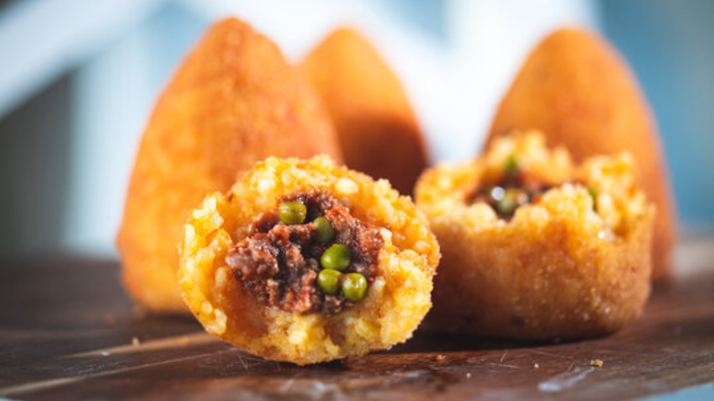
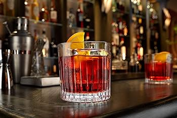

Entradas Mais Pedidas

Bruschetta
R$ 35,00
Carpaccio
R$ 70,00
Insalata di Pomodori e Cipolla
R$ 35,00Avaliações
Lucas Silva
★★★★★
Maiara Oliveira
★★★★
Ana Clara Silva
★★★
Entradas Quentes Mais Pedidas

Arancini
R$ 45,00
Insalata di Mare
R$ 90,00
Polenta con Funghi
R$ 65,00Avaliações
Marcos de Oliveira
★★★★★
Daniel Sanches
★★★★
Daiane Caetano
★★★
Pratos Principais (Massas) Mais Pedidas

Lasagna alla Bolognese
R$ 85,00
Fettucine Alfredo
R$ 70,00
Lasagna di spinaci e ricotta
R$ 50,00Avaliações
Cala Alcantra
★★★★★
Mark Grayson
★★★★
Luzia Colin
★★★
Pratos Principais Mais Pedidos

Frango à Cacciatora
R$ 55,00
Osso Buco
R$ 130,00
Saltimbocca à Romana
R$ 110,00Avaliações
Khyane silvestre
★★★★★
Vincenzo Torres
★★★★
Nélio Cantral
★★★
Bebidas Mais Pedidos

Chianti Vinho
R$ 28,00

Averna
R$ 28,00Cynar
R$ 28,00Avaliações
Maria Custódio
★★★★★
Diego Ferraz
★★★★
Malia dos Santos
★★★